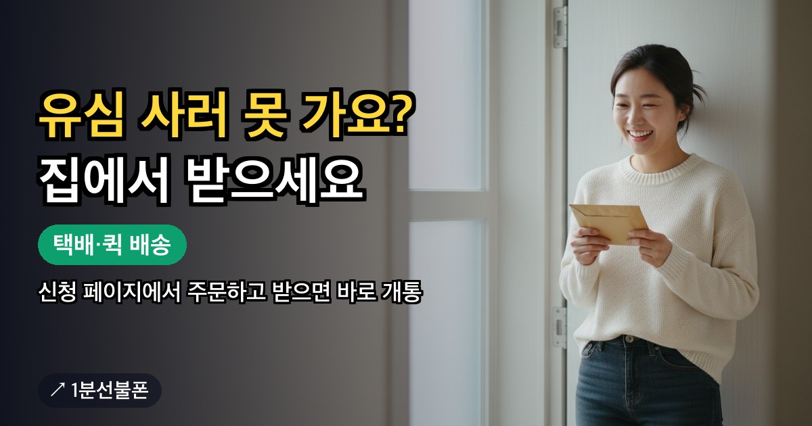
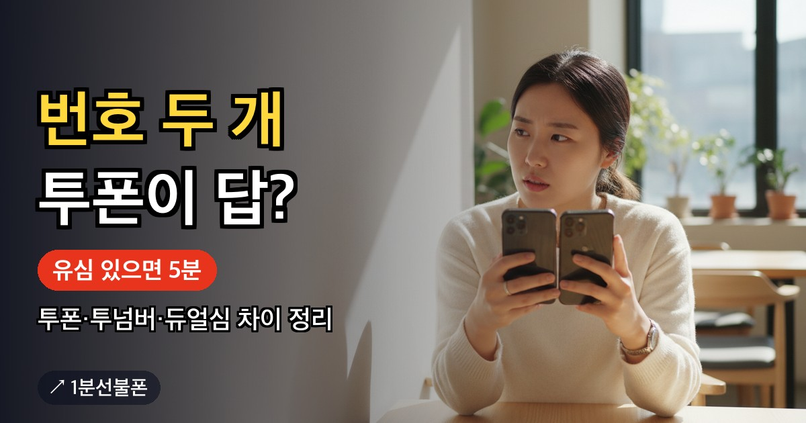

집 근처 편의점에 원하는 유심이 없거나 매장까지 나가기 어렵다면, 유심을 인터넷으로 신청해 받는 길이 있습니다. 앤텔레콤 신청 페이지 안에서 택배 배송이나 퀵 배송을 골라 유심을 받고, 도착하면 그 신청 페이지로 돌아가 유심 정보를 넣어 개통을 마치는 방식입니다. 편의점 구매와 무엇이 다른지, 주문 전에 무엇을 정해야 하는지부터 차례로 짚어 보겠습니다.
- 유심이 없으면 앤텔레콤 신청 페이지 안에서 택배 또는 퀵 배송으로 받을 수 있음
- 주문 전에 KT망·LG U+망부터 정하기 — 5G 요금제는 L망, 다른 통신사 유심은 재사용 불가
- 편의점 유심은 6,600~8,800원, 배송비와 도착 시점은 주문 화면 안내로 확인
- 유심이 도착하면 신청 페이지에서 유심 정보 입력 후 개통하기, 그 뒤로는 5분
- 미납·연체·신용불량이어도 신청 가능, 간편인증서가 없으면 센터 방문으로
인터넷 유심 신청이 맞는 경우 — 근처에서 구하기 어려울 때
선불유심은 편의점에서 살 수 있지만, 망에 따라 파는 곳의 폭이 다릅니다. KT망 바로유심은 CU·GS25·이마트24 편의점 3사에서 취급해 비교적 찾기 쉬운 반면, LG U+망 모두의원칩의 판매처는 이마트24·B마트·지하철 역 자판기이고 CU·GS25에는 들어오지 않습니다. 동네에 이마트24가 없고 역도 멀다면 LG U+망 유심 하나를 사려고 꽤 먼 길을 나서야 할 수 있습니다.
매장마다 재고가 달라 막상 가 보니 원하는 유심이 없는 일도 생깁니다. 아래 가운데 하나라도 해당한다면 편의점을 찾아다니기보다 인터넷으로 신청하는 쪽이 수고를 덜어 줍니다.
- 가까운 이마트24나 지하철 역 자판기가 없어 LG U+망 유심을 구하기 어렵다
- 편의점에 들렀는데 쓰려는 망의 유심 재고가 없었다
- 몸이 불편하거나 일정 때문에 여러 매장을 돌아볼 여유가 없다
주문 전에 망부터 정하기 — KT망·LG U+망 유심은 서로 다릅니다
인터넷으로 주문하더라도 고르는 순서는 편의점과 같습니다. 망을 먼저 정하고, 그 망의 요금제를 고른 다음, 거기에 맞는 유심을 주문하는 흐름입니다. KT망과 LG U+망은 호환되는 유심이 따로 있어서, 망을 정하지 않은 채 주문하면 쓰려던 요금제와 맞지 않는 유심이 도착할 수 있습니다.
예를 들어 5G 요금제인 L망 5G 20GB+를 쓰려면 LG U+망 유심이 있어야 합니다. 가장 많이 선택하는 선불 396 10.3G는 KT망과 LG U+망 양쪽에 있어 어느 망으로 주문해도 되지만, 부가·영상통화 분수는 망마다 다릅니다. 지금 쓰는 휴대폰이 고른 망과 유심을 지원하는지도 주문 전에 함께 살펴 두세요.
한 가지 더, 앤텔레콤 회선에는 SKT·KT·LG U+ 등 타 통신사에서 쓰던 유심을 옮겨 끼울 수 없습니다. 서랍 속 예전 유심으로 대신하려 하지 말고 앤텔레콤용 유심을 새로 받아야 합니다. 망별 차이를 더 비교하고 싶다면 선불유심 추천 글을 참고하세요.
편의점 구매와 택배·퀵 신청, 이렇게 다릅니다
두 방법 모두 앤텔레콤에서 쓸 수 있는 유심을 손에 넣는 과정이지만, 어디서 구하고 어떻게 받는지가 다릅니다.
| 구분 | 편의점에서 직접 구매 | 신청 페이지에서 택배·퀵 |
|---|---|---|
| 구하는 곳 | KT망 CU·GS25·이마트24 / LG U+망 이마트24·B마트·지하철 역 자판기 | 앤텔레콤 신청 페이지 안의 유심 구매 |
| 받는 방법 | 매장에 가서 바로 구매 | 택배 배송 또는 퀵 배송 중 선택 |
| 유심 비용 | 6,600~8,800원 | 주문 화면에 표시되는 금액 확인 |
| 배송비·도착 시점 | 해당 없음 | 주문 화면 안내 확인 |
| 미리 볼 것 | 포장의 상품명·망 표기·앤텔레콤 호환 안내 | 주문하는 망이 고른 요금제와 같은지 |
배송비가 얼마인지, 언제 도착하는지는 이 글에서 단정할 수 있는 정보가 아니어서 숫자를 적지 않았습니다. 택배와 퀵 가운데 어느 쪽이 나은지는 주문 화면에 나오는 비용과 도착 안내를 나란히 놓고 고르면 되고, 편의점 유심 값 6,600~8,800원을 비교 기준으로 삼으면 판단이 쉽습니다.
택배·퀵으로 받는 순서 — 주문부터 유심 정보 입력까지
- 쓸 망과 요금제를 정합니다. 요금제는 12,100원부터 있고, 전체 구성은 선불폰 요금제에서 볼 수 있습니다.
- 앤텔레콤 신청 페이지에 들어가 유심 구매에서 택배 배송 또는 퀵 배송을 고릅니다.
- 주문 화면 안내에 따라 받을 곳과 연락처를 넣고 주문을 마칩니다.
- 유심이 도착하면 포장에 적힌 상품명과 망이 주문한 것과 같은지 확인합니다.
- 신청 페이지에서 인증을 거친 뒤 유심 정보를 입력하고 개통하기를 누릅니다.
1분선불폰은 준비 과정을 안내하는 사이트라 유심을 직접 팔거나 보내 주지 않습니다. 주문과 개통 신청은 모두 앤텔레콤 신청 페이지에서 이뤄지니 주소 같은 개인 정보도 그 화면에만 입력하세요. 메뉴 위치나 화면 구성은 바뀔 수 있으므로 접속했을 때 보이는 안내를 기준으로 따라가면 됩니다.
유심을 받은 뒤 개통까지 — 인증서, 안면인증, 확인 전화
온라인 개통에는 본인 명의 간편인증서가 있어야 합니다. 웹 신청에서는 토스·카카오 등의 인증서를 쓸 수 있습니다. 인증을 마치고 받은 유심의 정보를 입력한 다음 개통하기를 누르면 되고, 유심이 손에 들어온 뒤로는 개통까지 5분이면 충분합니다.
2026년 10월부터는 안면인증을 반드시 통과해야 개통할 수 있습니다. 천장 형광등 빛이 얼굴에 반사되지 않는 자리를 먼저 고르고, 고개를 돌리라는 지시가 나오면 눈은 화면에 둔 채 고개만 돌리지 말고 시선까지 같은 방향으로 옮겨 주세요. 더 자세한 요령은 개통 안면인증 글에 정리돼 있습니다.
개통이 끝나면 본사에서 확인 전화(해피콜)를 겁니다. 이 전화를 놓치면 번호가 해지될 수 있으니, 유심을 끼운 날에는 처음 보는 번호라도 받아 주세요. 미납·연체·신용불량이어도 개통할 수 있다는 점은 유심을 편의점에서 샀든 배송으로 받았든 똑같습니다.
정리 — 인터넷 유심 신청은 이 순서로
근처에서 맞는 유심을 구하기 어렵다면 무리해서 매장을 찾기보다 신청 페이지에서 받아 보는 편이 낫습니다. 핵심은 망과 요금제를 먼저 정하고, 그 망의 유심을 택배나 퀵으로 받은 뒤, 신청 페이지에서 유심 정보를 넣어 개통하는 것입니다.
본인 명의 간편인증서를 만들 수 없는 상황이라면 온라인으로는 진행이 막히므로 센터 찾기에서 방문 개통을 알아보세요. 이때 유심을 미리 준비해 갈지도 예약 상담 때 함께 물어보면 헛걸음을 줄일 수 있습니다. 편의점에서 찾을 유심 이름과 포장 색은 유심 준비 안내, 신청 단계 전체는 개통 방법에서 확인할 수 있습니다.
자주 묻는 질문
인터넷으로 유심을 신청하면 배송비가 따로 드나요?
택배·퀵 배송 비용과 도착 시점은 앤텔레콤 신청 페이지의 주문 화면에 표시되는 금액과 안내를 기준으로 확인하세요. 비교 삼아 말하면, 편의점에서 직접 사는 유심은 6,600~8,800원입니다.
미납이 있어도 배송받은 유심으로 개통되나요?
네. 요금을 먼저 내고 쓰는 선불이라 개통할 때 신용을 조회하지 않고, 미납·연체·신용불량 상태로도 진행할 수 있습니다. 유심을 편의점에서 샀는지 배송으로 받았는지는 자격과 상관없습니다.
쓰던 SKT 유심을 그대로 쓰면 안 되나요?
그 유심으로는 개통할 수 없습니다. 타 통신사 유심은 앤텔레콤에서 재사용이 막혀 있어, 고른 망(KT 또는 LG U+)에 맞는 앤텔레콤용 유심을 편의점이나 택배·퀵으로 새로 구해야 합니다.
유심을 받고 나서 개통까지 얼마나 걸리나요?
유심이 도착한 뒤라면 개통은 5분이면 됩니다. 본인 명의 간편인증서를 미리 확인하고 안면인증할 자리까지 정해 두면 한 번에 끝내기 쉽습니다.
간편인증서가 없으면 배송받은 유심도 소용없나요?
온라인 개통은 본인 명의 간편인증서가 필요해서, 없으면 센터 방문 개통으로 진행합니다. 실물 신분증을 들고 예약한 센터에 가면 되고, 유심을 미리 준비할지는 예약할 때 함께 확인하세요.
같이 보면 좋은 글

선불폰 방문 개통 — 어디로, 무엇을 들고, 어떤 순서로 가나
온라인 인증이 막혔거나 직접 얼굴을 보고 개통하고 싶다면 방문 개통이 길입니다. 그런데 집 앞 KT·LG…

선불폰 셀프개통 — 신청 페이지에서 개통하기까지 단계별 정리
선불폰 셀프개통은 매장 직원의 도움 없이 내가 직접 앤텔레콤 신청 페이지에서 회선을 여는 방식입니다…

선불폰 개통 사이트 — 정식 신청 화면 구별하고 안전하게 신청하기
'선불 유심 개통 사이트'를 검색하면 비교 글과 안내 페이지, 실제 신청 화면이 한데 섞여 나옵니다…

번호 두개 쓰는법 — 투폰·투넘버·듀얼심 차이와 고르는 기준
번호를 하나 더 쓰고 싶을 때 투폰, 투넘버·듀얼넘버, 물리 듀얼심, eSIM 듀얼심 중 뭘 골라야 할지…